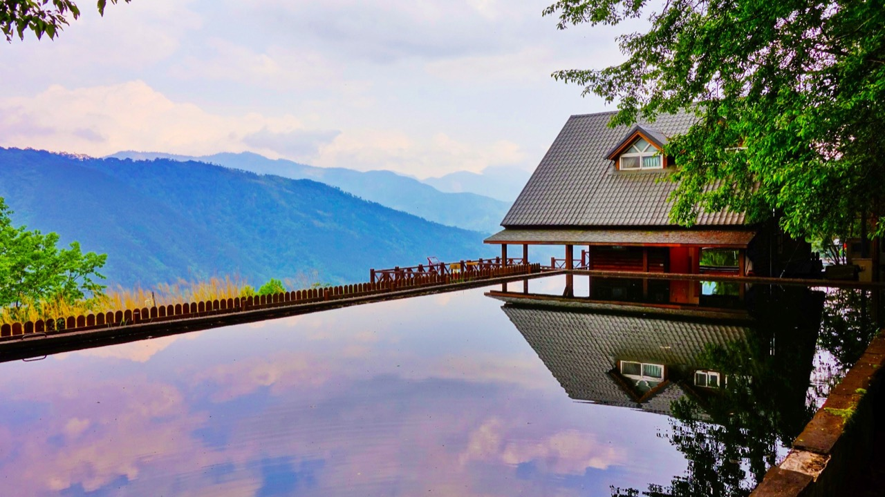
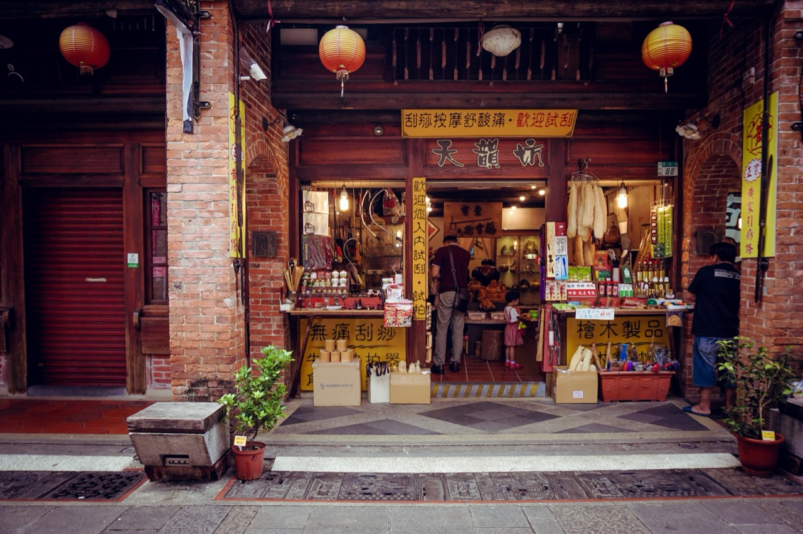

Below is a collection of Taiwan-themed wallpaper images for your desktop, laptop or mobile. Here at WallpaperData.com you can find millions of wallpaper collections in different themes. You can take a look, be inspired and enjoy a variety of high-resolution images.

